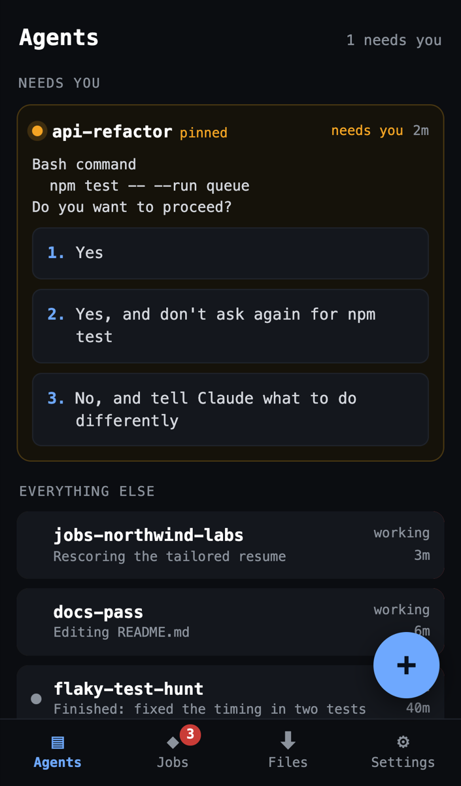
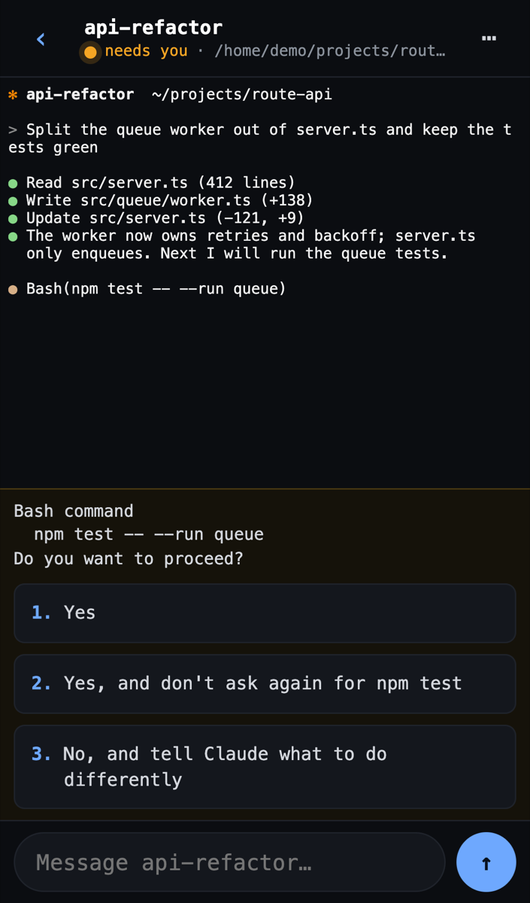
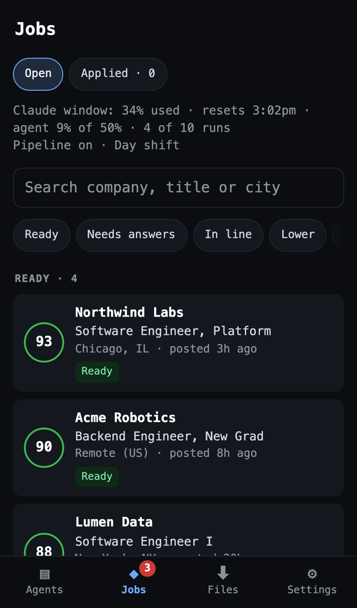

agent-hub
Runs Claude Code agents on an always-on server, with a phone app to watch the live terminal, answer their questions and approve their actions.




The real app, shown with demo data.
What it does
- Keeps each Claude Code session running in tmux on the server, so work continues when the laptop is closed.
- Shows every session on the phone, sorted by which ones need you. Questions and permission prompts appear as buttons.
- Runs a job-search pipeline: it crawls company job boards, scores each posting, then runs an unattended agent session that tailors a resume and checks it.
- Fills Greenhouse, Ashby, Lever and Workday application forms with Playwright, as a dry run by default.
How it works
A Node and TypeScript server (Fastify) manages the sessions and streams each terminal over WebSockets. Claude Code hooks report when an agent is working, done or waiting. The phone app is an installable web app served by the same server. The server listens only on localhost and is reachable through a private Tailscale network, so nothing is open to the public internet.
Built with TypeScript, Node.js, Fastify, WebSockets, tmux, SQLite, Python, Playwright, Claude Code, Amazon Bedrock and Tailscale.
Next
Move the server and the browser-based form filler to Amazon EC2 so more sessions can run in parallel, and route more model calls through Amazon Bedrock under the daily spending cap already in the code.